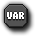

Tutorial
Page 3 of 9
Variable Actions
There are two important actions to deal with variables directly, which can be found in the Control tab of the Actions list in the Object Properties window.
Set a variable.
With this action you can set or change the value of a given variable. This can either be one of the built-in variables or your own variable. To create a new variable you specify the name of the variable and the initial
value, and to set a built-in variable you give the name of it, and it's new value. When you check the Relative box the given value is added to the current value of the variable (so a positive value
like "5" will increase the value of the variable and a negative value like "-3" will decrease it). Please note that this can only be done for your own variables if the variable already has been set previously!
Rather than providing a simple value for the variable you can also give an expression. For example, to double the score you could set the value of the built in variable score to be 2 * score.
 Check a variable.
With this action you can check what the value of a particular variable is. If the value of the variable is equal to the number given, the question returns true and the next action (or block of actions) is
performed. If it is not equal (ie: returns false), the next action (or block of actions) is not performed. You can also indicate that the check should be whether the variable value is smaller than the given
value or larger than the given value. Note that you are not restricted to using just variables but can check any mathematical expression you like. Later, we will see a number of examples of the use of
these actions.
Before continuing, there is one more thing you need to know about variables... As indicated above there are instance variables that "belong" to an instance and there are global variables which
belong to no instance, but can be accessed and changed or set by all instances. When you use your own variables these are always instance variables that only exist for the instance in whose actions
you use them.
If you want to use your own global variables you have to prefix their name with the word global and a dot. So, for example, you can use a variable global.bonus to indicate the
number of bonus points gathered by the player. Always be careful that you use variable names that do not yet exist and are also different from the names of sprites, sounds, etc. One way to achieve this is to
always let your variables start with e.g. v_.
© Copyright YoYo Games Ltd. 2015 All Rights Reserved